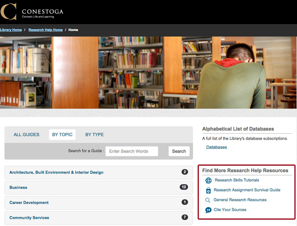

Library Research Help Resources
The Conestoga Library Resource Centre home page offers a Research Help page with links to many useful help resources.
Click each icon below to learn more about the Research Help Resources available to you.
Research Skills Tutorials
This collection of videos orients you to searching for materials in the LRC, different resource types, retrieving materials, and how to evaluate the credibility of a source. Content is organized under the tabs: Beginning, Preparing, Finding, and Evaluating. It is recommended that you review all tutorials in this section.
Research Assignment Survival Guide
This step-by-step guide leads you through five main stages of the research and writing process. Getting Started and Doing your Research are especially relevant to conducting job-related research.
General Research Resources
This page includes links to various search pages for different resource types and provides direction on which type to use when (e.g. for background information, try encyclopedias).
Cite Your Sources
This page provides links to further information that will help you to properly cite, quote, and paraphrase original sources and apply APA@Conestoga.